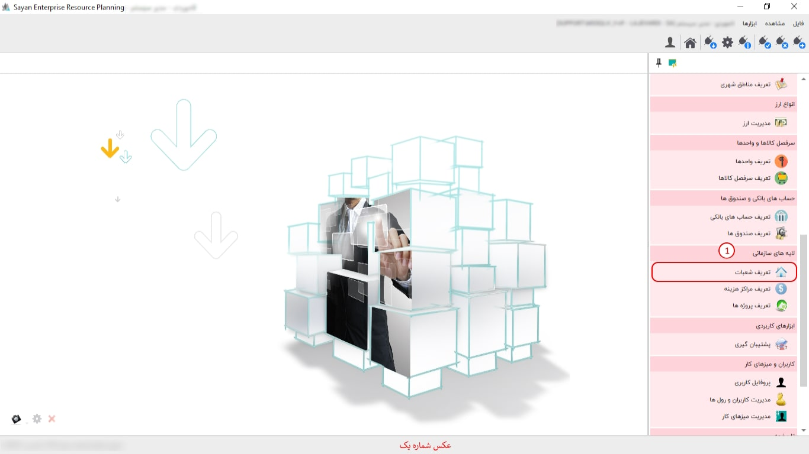
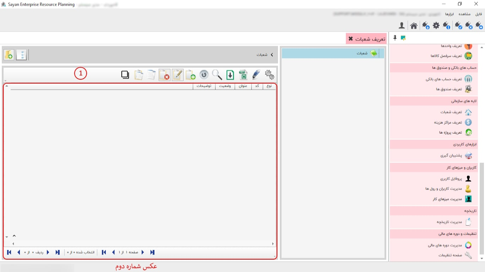
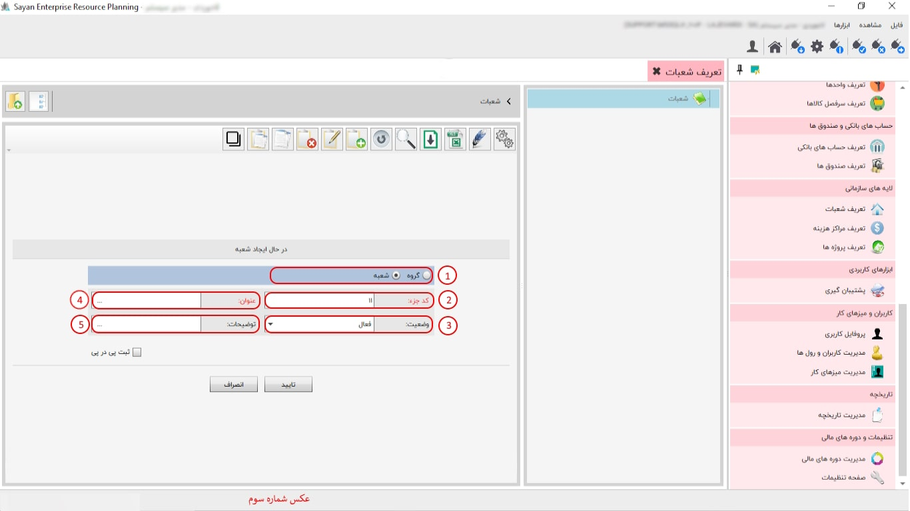

این قسمت به شما امکان تعریف شعبات را می دهد، تعریف شعبات در سیستم های صدور سفارشات، انبارداری، خریدوفروش و تولید مورد استفاده شما قرار می گیرد. به عنوان مثال در سیستم خرید و فروش می توانید مشخص کنید کالای خریداری شده مربوط به کدام شعبه است. پیشنهاد می شود ابتدا شعبات را گروه بندی کنید، سپس در درون هر گروه شعبه ی مورد نظر را تعریف نمایید، برای گروه بندی و تعریف شعبات از نوار ابزار گزینه ی اضافه یا F8 را بزنید، تصویر زیر نمایان خواهد شد:
برای ادامه مطلب به عکس شماره دوم مراجعه نمایید.
-کادر شماره یک:
برای ادامه مطلب به عکس شماره سوم مراجعه نمایید.
-کادر شماره یک:
-کدجزء(کادر شماره دوم):
-وضعیت(کادر شماره دوم):
-عنوان(کادر شماره چهارم):
-توضیحات(کادر شماره پنجم):